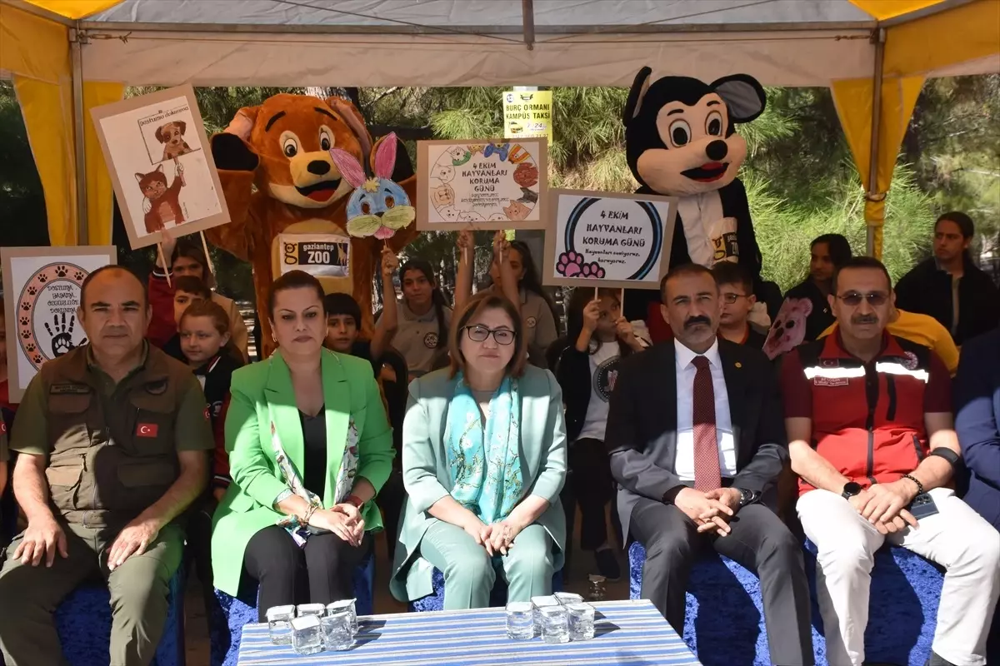

Gaziantep Hayvanat Bahçesi’nde düzenlenen “Hayvanları Koruma Günü” Fotoğraf Sergisi, ziyaretçilere hayvanların korunmasının önemi hakkında farkındalık kazandırmayı amaçlayan özel bir etkinliktir. Sergide nesli tehlike altında olan türlerin fotoğrafları, hayvanların doğal yaşam alanlarındaki görüntüleri ve çevre bilinci temalı kareler yer alır. Öğrenciler ve aileler rehberler eşliğinde sergiyi gezerken, hayvanların ekosistemdeki rolü ve korunma gerekliliği hakkında bilgilendirilir. Sergi kapsamında ayrıca bilgilendirme panoları, doğa temalı atölyeler ve hayvan besleme gösterileri düzenlenerek çocukların doğayla bağ kurması sağlanır. Bu etkinlik, hem sanat hem de eğitim yoluyla hayvan sevgisini pekiştirir, ziyaretçilere unutulmaz bir deneyim sunar ve Gaziantep Hayvanat Bahçesi’nin sosyal sorumluluk projeleri arasında önemli bir yer tutar.